Параметры сцены¶
Содержание
Все параметры, определяющие вид и поведение сцены (а не отдельных объектов), находятся на трёх вкладках: Render, Scene и World.
Вкладка Render¶

На этой вкладке находятся параметры сцены, связанные с рендерингом изображения.

Shading¶
На этой панели находятся настройки затенения.
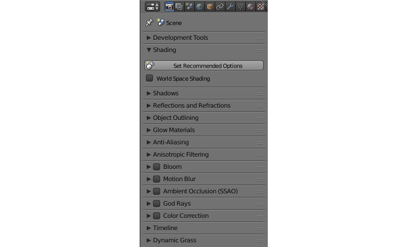- Set Recommended Options
Применяется для достижения максимального соответствия между тем, как сцена выглядит в окне просмотра Blender и тем, как она выглядит в движке. При нажатии на кнопку:
включается World Space Shading,
режим материала переключается на GLSL,
метод затенения объектов в окне просмотра переключается на Material,
подгонка сенсора главной камеры переключается на Vertical.
- World Space Shading
Включает и выключает затенение в мировом пространстве (т.е. для расчёта освещённости объектов используется информация об освещении в мировом пространстве координат). Отключено по умолчанию.

Reflections and Refractions¶
Настройка эффектов отражения и преломления.

- Reflection
Настройки эффекта отражения. Может иметь значения
ONиOFF. Значение по умолчанию -ON.- Refraction
Настройки эффекта преломления. Может иметь значения
ON,OFFиAUTO. Значение по умолчанию -AUTO.- Quality
Настройки качества эффекта отражения и преломления. Может иметь значения
HIGH(высокое качество),MEDIUM(среднее) иLOW(низкое). Значение по умолчанию -MEDIUM.
Glow Materials¶
Настройки эффекта свечения материалов. Подробно описаны в соответствующем разделе.
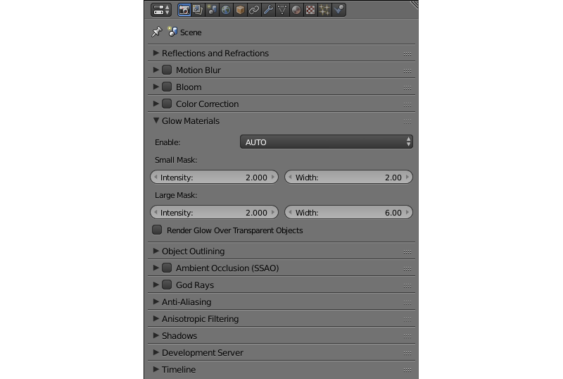Примечание
При динамической загрузке опция AUTO интерпретируется как OFF, если в главной сцене не было материалов с эффектом Glow. В этом случае, чтобы эффект Glow работал на динамически подгружаемых объектах, нужно выставить данный параметр в значение ON.
Anti-Aliasing¶
Настройки сглаживания изображения (anti-aliasing). Подробно описаны в соответствующем разделе.

Anisotropic Filtering¶
Используется для включения и выключения анизотропной фильтрации, а также для задания числа сэмплов, используемых для фильтрации. Анизотропная фильтрация отключена по умолчанию.

Доступные значения: 16x, 8x, 4x, 2x и OFF (значение по умолчанию).

Motion Blur¶
Настройки эффекта размытия изображения при быстром движении. Подробно описаны в соответствующем разделе.
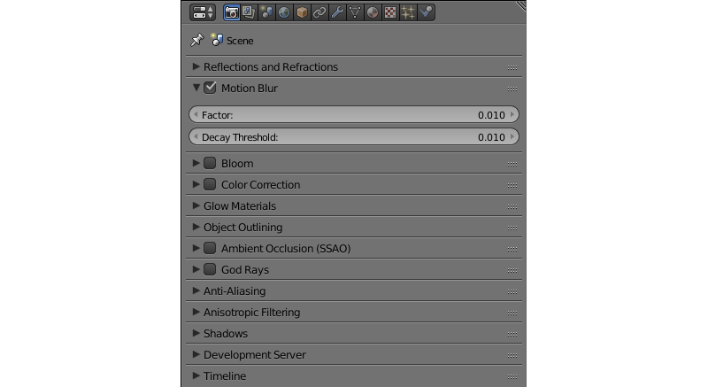Ambient Occlusion (SSAO)¶
Настройки эффекта взаимного затенения (SSAO). Подробно описаны в соответствующем разделе.
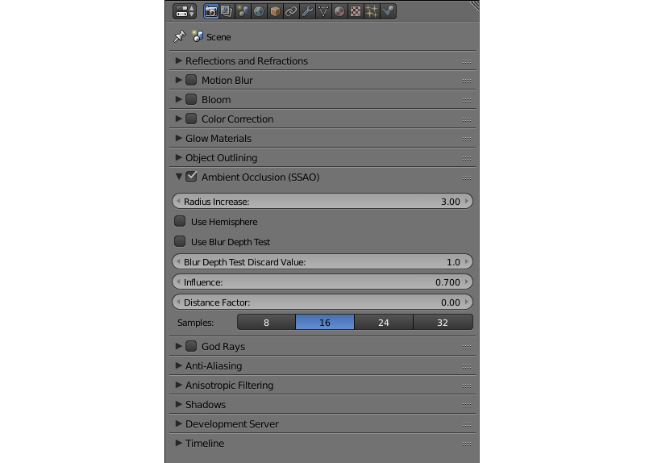
Timeline¶
Настройки таймлайна.

- Start Frame
Первый кадр таймлайна. По умолчанию 1.
- End Frame
Последний кадр таймлайна. По умолчанию 250.
- Frame Rate
Количество кадров в секунду. По умолчанию 24. Этот параметр определяет скорость воспроизведения анимации (но не скорость работы самой сцены).
Dynamic Grass¶
Включает и выключает эффект травяного покрова.
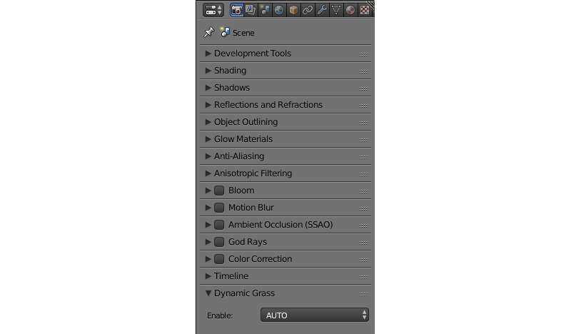Доступные значения: ON, OFF и AUTO. Значение по умолчанию - AUTO.
Вкладка Scene¶
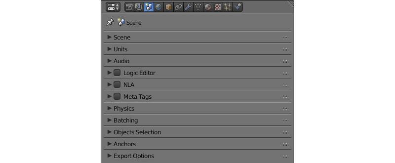На этой вкладке находятся настройки, связанные с поведением сцены, в том числе настройки звука, физики, анимации и пр.

Audio¶
Настройки параметров звука.
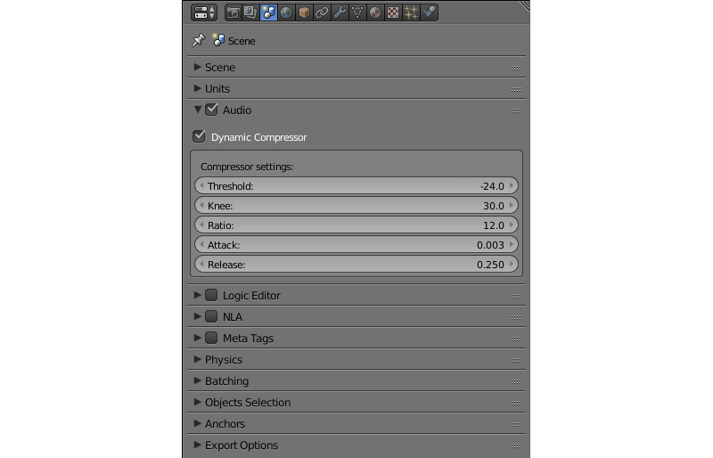- Volume
Общая громкость звука в приложении. Значение может изменяться от 0 до 100, значение по умолчанию - 1.0.
- Distance Model
Модель расстояния, используемая для расчёта затухания. Движок поддерживает следующие модели:
None- затухание не используется, громкость звука не зависит от расстояния.Exponent Clamped- экспоненциальная модель расстояния с отсечением.Linear Clamped- линейная модель расстояния с отсечением.Inverse Clamped- инверсивная модель расстояния с отсечением.Следующие модели поддерживаются движком частично (работают так же, как соответствующие модели с отсечением):
ExponentLinearInverseЗначение по умолчанию -
Inverse Clamped.- Speed
Задаёт скорость звука, которая используется для вычисления эффекта Допплера. Это значение измеряется в метрах в секунду и по умолчанию равно 343.3.
- Doppler
Этот параметр задаёт значение высоты тона, используемое для расчёта эффекта Допплера. По умолчанию значение равно 1.0.
- Dynamic Compressor
Сжатие динамического диапазона звукового сигнала. Применяется для того, чтобы сделать звучание более насыщенным и более равномерным по громкости. По умолчанию отключено.
- Threshold
Значение входного сигнала, при превышении которого включается компрессор. По умолчанию равно -24.
- Knee
Интервал над порогом (
Treshold), где кривая громкости переходит в режим затухания. По умолчанию равен 30.- Ratio
Фактор затухания компрессора. Значение по умолчанию равно 12.
- Attack
Время (в секундах) для затухания громкости на 10 дБ. По умолчанию равно 0.003.
- Release
Время (в секундах) для повышения громкости на 10 дБ. По умолчанию равно 0.25.
Logic Editor¶
Настройки использования логических деревьев (создаваемых в редакторе логики) при воспроизведении сцены. По умолчанию отключено.
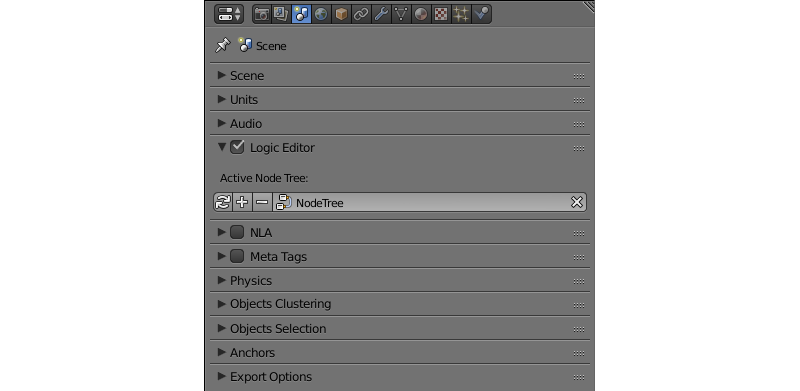- Active Node Tree
Дерево логики, используемое при воспроизведении сцены.
NLA¶
Настройки использования нелинейной анимации при воспроизведении сцены. По умолчанию отключено.
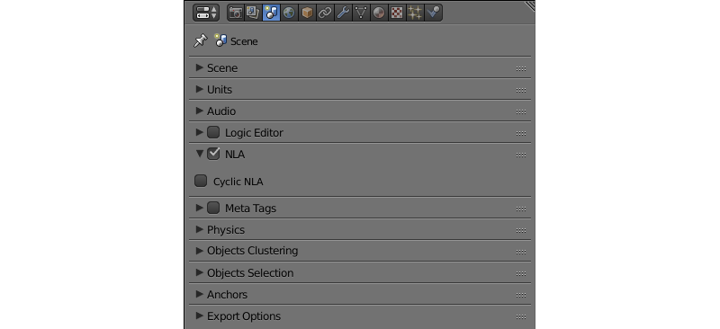- Cyclic NLA
При активации этого параметра нелинейная анимация будет зациклена.
Meta Tags¶
Мета-теги приложения.
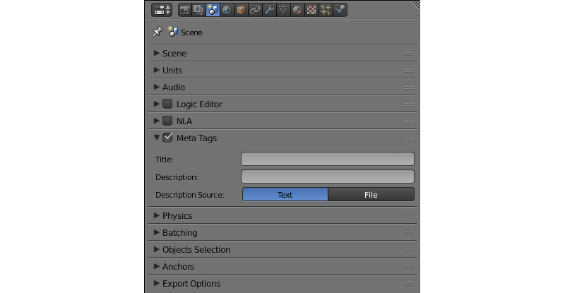- Title
Заголовок приложения.
- Description
Описание приложения. Может быть текстовым или представлять собой ссылку на файл (если параметр
Description Sourceимеет значениеFile).- Description Source
Источник описания приложения. Описание может быть взято из файла или задано непосредственно в поле
Description. Доступные значения -TextиFile. Значение по умолчанию -Text.
Physics¶
Настройки использования физики.
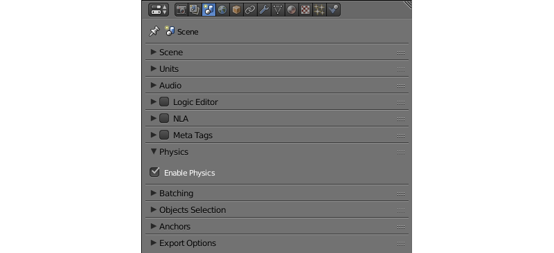- Enable Physics
Использовать физику в приложении. Включено по умолчанию.
Object Clustering & LOD¶
Настройки кластеризации объектов и Уровней Детализации (LOD).
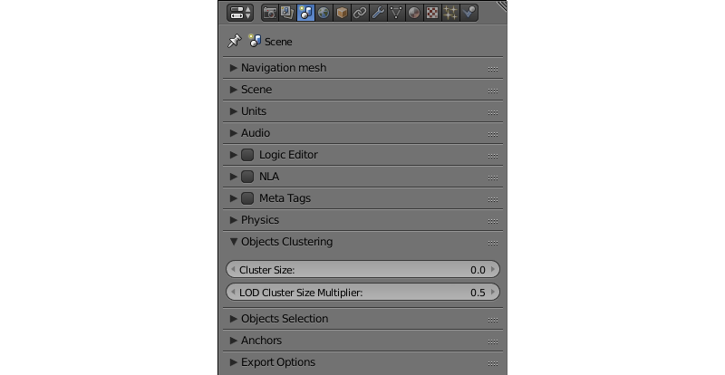- Cluster Size
Размер кластера, применяемого для объединения объектов (в метрах). Может быть использован в целях оптимизации. Если этот параметр равен нулю, движок будет пытаться объединить все объекты в сцене. Значение по умолчанию - 0.
- LOD Cluster Size Multiplier
Этот параметр используется для разбиения кластеров на части (в зависимости от расстояния LOD, которое настраивается индивидуально для каждого объекта) для того, чтобы переходы между различными уровнями детализации были менее заметны. Размеры меньших кластеров определяются на основании расстояний LOD, умноженных на значение этого параметра. Высокие значения увеличивают размер кластеров, что повышает производительность, но делает более заметными переходы между уровнями детализации. Низкие значения делают переходы менее заметными, но снижают производительность. Значение по умолчанию - 0.5.
- LOD Smooth Transitions
Определяет, какие объекты будут использовать плавные переходы при переключении уровней LOD. Может принимать следующие значения:
OFF - плавные переходы отключены (наиболее быстрый вариант).
NON-OPAQUE - плавные переходы используются для объектов с материалами типов
Add,Alpha Clip,Alpha Blend,Alpha SortиAlpha Anti-Aliasing.ALL - плавные переходы используются для всех объектов (наименее быстрый вариант).
Вариант “ALL” может существенно снизить производительность приложения, поэтому его следует использовать только тогда, когда это необходимо. Значение параметра по умолчанию - “NON-OPAQUE”.
Max LOD Hysteresis Interval
Длинна (в метрах) интервала, который используется для переключения уровней LOD. Половина этого значения прибавляется к пороговому расстоянию или вычитается из него, образуя два разных пороговых расстояния для более высокого и более низкого уровней LOD. Делает менее заметным эффект “popping”. По умолчанию этот параметр равен 4.0.
Object Selection¶
Настройки параметров выбора объектов с помощью функции API pick_object() и нодовой логики.
Примечание
В просмотрщике сцен выделение включено по умолчанию. Отключить его можно в разделе Tools & Debug.
- Enable
Параметр, который определяет, могут ли объекты быть выбраны. Может иметь значения
ON,OFFиAUTO. По умолчанию имеет значениеAUTO.
Anchors¶
Настройки определения видимости якорей.
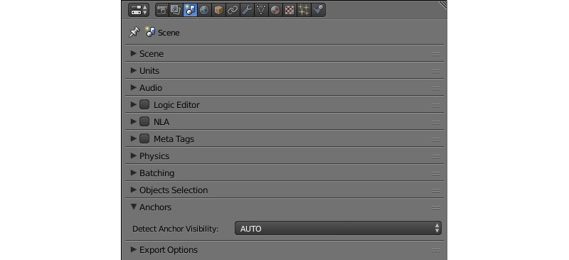- Detect Anchors Visibility
Параметр определения видимости якорей. Возможные значения:
ON,OFFиAUTO. Значение по умолчанию -AUTO.
Export Options¶
Параметры экспорта настроек сцены.
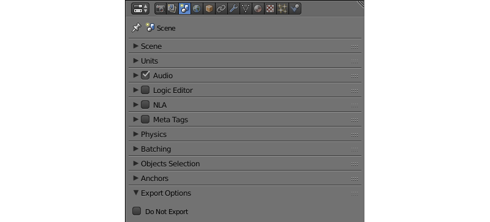- Do Not Export
Игнорировать настройки сцены при экспорте приложения.
Вкладка World¶
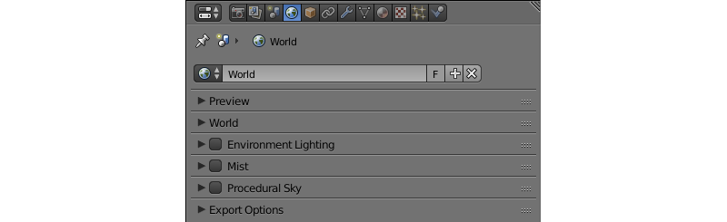На этой вкладке находятся параметры окружающей среды, такие, как настройки неба, тумана и т.п.

World¶
Настройки параметров неба.
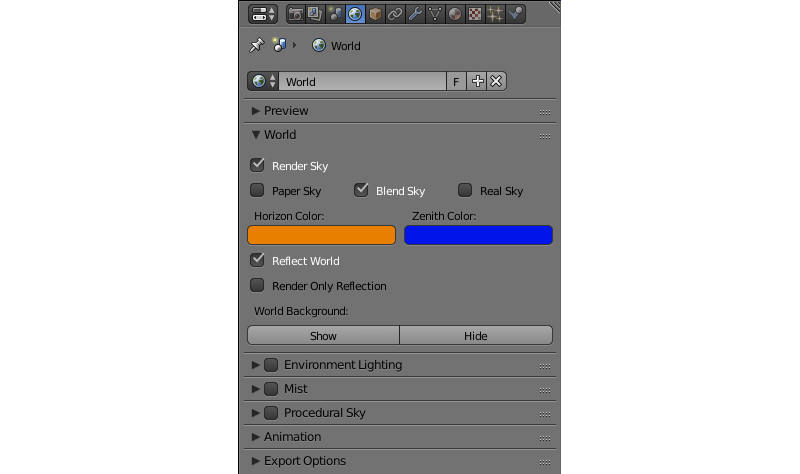- Render Sky
Отображение неба.
- Paper Sky
Если эта опция включена, градиент неба всегда будет отрисовываться сверху вниз относительно кадра независимо от угла наклона камеры.
- Blend Sky
Плавный переход от цвета горизонта к цвету неба в зените.
- Real Sky
Визуализация неба с горизонтом, зависящим от угла наклона камеры.
- Horizon Color
Цвет неба у горизонта.
- Zenith Color
Цвет неба в зените.
- Reflect World
Отображать небо при расчёте отражений.
- Render Only Reflection
Отображать небо только при расчёте отражений.
- World Background
Включает и выключает опцию
World Background(находится на вкладкеDisplayпанели3D View). При включении этой опции цвета окружающей среды будут отображаться в окне просмотра так же, как в самом движке.
Environment Lighting¶
Настройки параметров освещения от окружающей среды. Подробно описаны в соответствующем разделе.
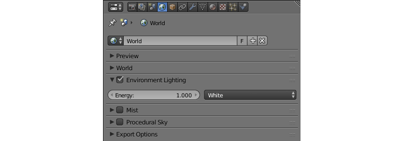Mist¶
Настройки параметров тумана.

- Minimum
Минимальная интенсивность тумана. По умолчанию равна 0.
- Depth
Расстояние от камеры, на котором эффект тумана достигает наибольшей интенсивности. По умолчанию равно 25.
- Start
Расстояние от камеры, на котором начинает проявляться эффект тумана. По умолчанию равно 5.
- Height
Определяет, насколько быстро плотность тумана падает с ростом высоты. По умолчанию равно 0.
- Fall Out
Правило, по которому возрастает интенсивность тумана между его границами (определяются параметрами
StartиDepth). Доступные значения:Quadratic,Linear,Inverse Quadratic. Значение по умолчанию -Quadratic.- Use Custom Colors
Позволяет задать цвет тумана. По умолчанию включено. Если отключено, будет использоваться стандартный цвет 0.5, 0.5, 0.5.
- Fog Color
Цвет тумана. Может быть настроен, если активирована опция
Use custom colors. По умолчанию установлен светло-серый цвет (0.5, 0.5, 0.5).

{kind=link}
{kind=link}
{kind=link}
{kind=link}
{kind=link}
{kind=link}
{kind=link}
{kind=link}
{kind=link}
{kind=link}
{kind=link}
{kind=link}
{kind=link}
{kind=link}
{kind=link}
{kind=link}
{kind=link}
{kind=link}
{kind=link}
{kind=link}
{kind=link}
Animation¶
Настройки анимации окружающей среды.
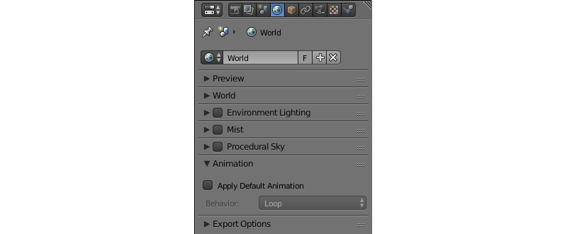{kind=link}
- Apply Default Animation
Если этот параметр включён, движок запускает проигрывание анимации окружающей среды после загрузки сцены.
- Behavior
Устанавливает поведение анимации окружающей среды. Доступные значения:
Loop- анимация воспроизводится циклически.Finish Stop- анимация проигрывается один раз.Finish Reset- анимация проигрывается один раз, после чего сбрасывается на нулевой кадр.
Эта опция доступна только при включённом параметре
Apply Default Animation.
Export Options¶
Настройки экспорта параметров окружения.
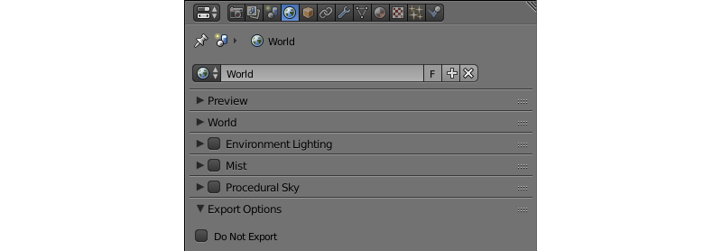{kind=link}
- Do Not Export
Игнорировать настройки окружения при экспорте приложения.